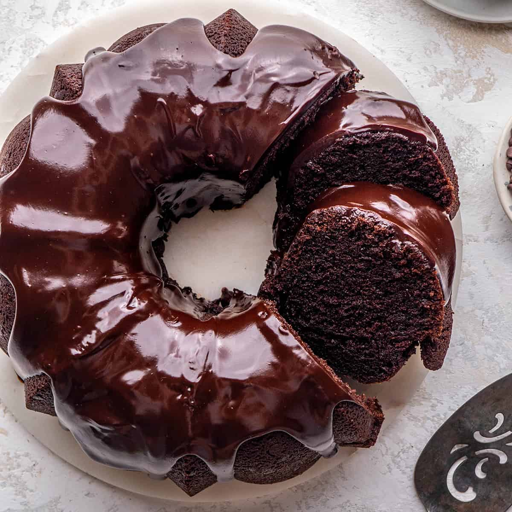

Chocolate Cake

Description
This is a recipe my grandma used to make, which she had gotten from her neighbor, who was a chef. I loved it so much as a child that I would not stop pestering her to give me the recipe until she relented.
As an aside, this cake fares quite well when shipped next-day air, and even when shipped internationally via express service. When I was living away from home, and even a few times when I lived abroad, my mother would make this cake for my birthday, cover it in saran wrap, and have it shipped to me, only leaving off the chocolate syrup to prevent it from making a mess.
Ingredients
- 1 box chocolate cake mix
- 1 package instant chocolate pudding
- 1 cup sour cream
- 4 eggs, slightly beaten
- 1/2 cup oil
- 1/2 cup water
- 1 tsp. coffee mixed into 1/2 cup of water
- 12 oz package of chocolate chips
- Chocolate syrup to taste
- Preheat oven to 350 degrees
- Use a stand mixer to mix all ingredients, except chocolate chips and chocolate syrup, for 5 minutes on low speed
- Add chocolate chips and stir them into the mixture with a spoon
- Spray bunt pan with no stick spray
- Bake at 350 degrees for 50 minutes
- Wait for cake to cool before removing from pan
- Drizzle with chocolate syrup
- Serve and enjoy